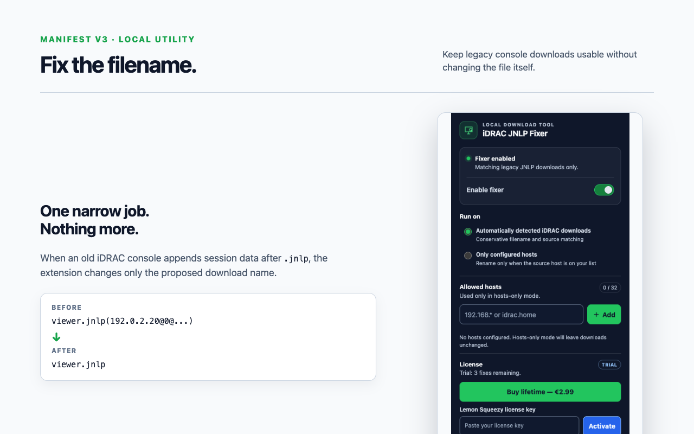

Watch the proposed filename
The browser tells the extension the filename, source URL and referrer while a download is being prepared.
A tiny utility for legacy infrastructure
iDRAC JNLP Fixer catches the filename that old Dell PowerEdge consoles generate and changes it to the name your JNLP association expects.
Live checkout is being prepared while the store completes verification.
The one problem it solves
The JNLP content may be fine, but a filename such as viewer.jnlp(...) can stop an existing JNLP association from recognizing it. The extension changes the filename during the download and leaves the file contents alone.
Before
viewer.jnlp(192.0.2.10@0@server,+PowerEdge+R710...)After
viewer.jnlpHow it works
The browser tells the extension the filename, source URL and referrer while a download is being prepared.
Only legacy viewer.jnlp(...) and jviewer.jnlp(...) shapes are eligible. Normal PDFs, ZIPs and other downloads are left alone.
The browser saves the result as viewer.jnlp or jviewer.jnlp, using its normal duplicate-file handling.
Private by design

Scope boundary
This product does not include a remote console, Java launcher, certificate workaround or server-management features. You still need a compatible Java/OpenWebStart setup and a reachable legacy iDRAC environment.
Frequently asked
The extension targets Chromium browsers. The primary QA matrix covers Chrome, Microsoft Edge and Brave, with Windows as the primary QA platform and macOS used for development.
No. It only fixes the download filename. TLS, certificates, Java versions, OpenWebStart associations and the legacy console itself are outside the product's scope.
The matching rules are deliberately conservative. A normal filename such as report.pdf is ignored, and an existing target file is never overwritten by the extension.
No. The planned license is a one-time €2.99 lifetime purchase handled by Lemon Squeezy. The Live checkout link will be enabled after store verification.
Need help?
Support can help separate a rename problem from a Java/OpenWebStart problem. Please do not send passwords, private keys or complete license keys.